Fourth pass: the same three screens at two to three times the detail
Left: the v3 screen Kort graded ("getting better but not quite there yet"). Right: v4. Every surface is repainted at full pixel density (five to six tones per material, edge wear, highlights), the mode cards carry a quieter line under each name, the HUD gains a battle feed, and the v3 deductions are fixed. Portraits now show the live model exactly as the unit identity spec frames it.
Detail at native size
Four crops taken 1:1 from the 1920 x 1080 renders: one GUI pixel is two by two screen pixels, as the game shows it at GUI scale 2.
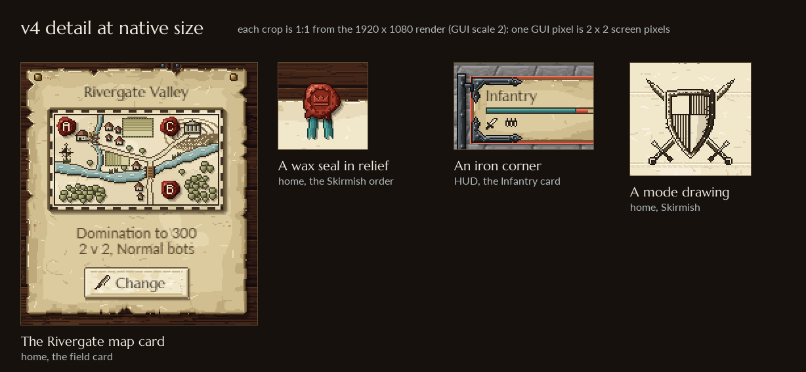
Iron Ledger HUD
The same iron and vellum object, now with a battle feed at the right edge.
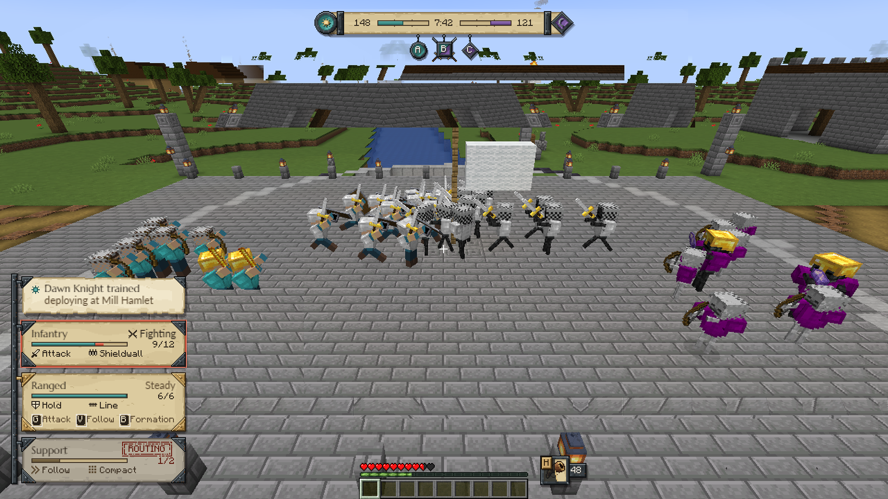
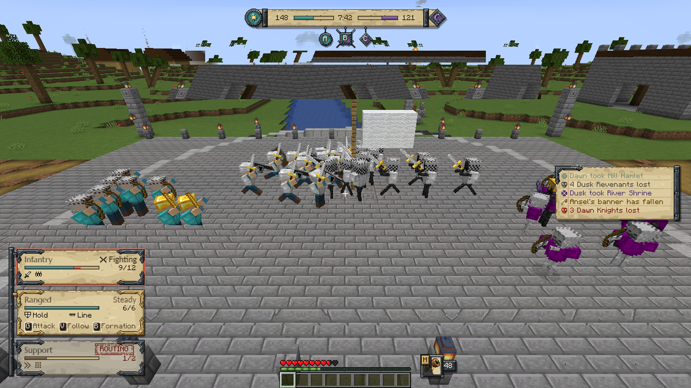
- v4.1: the battle feed is a leaf of the same ledger. It is a narrow vellum slip at the right edge, at mid-height, with the inked edge of the cards, ruled between its entries and down a margin. Its right edge is bound in a strip of riveted iron, the feed's own spine, mirroring the one the cards hang from, and its free top corner carries one riveted bracket like theirs. The newest line is at the bottom, five lines are in play, and each fades after about eight seconds. The mock shows five, the oldest fading out.
- Every kind of line has its own colour and its own glyph, so colour never works alone. On the vellum each is written in a dark ink of its hue, as the cards write theirs: a point we take (teal, seal), a point we lose (violet, struck seal), our losses (red, skull), enemy losses (grey, skull), a commander down (brass, fallen banner), a commander back (brass, raised banner), a rout or regroup (grey, stamp), and reinforcements and notices (ink, sun).
- The feed replaces the notice slip, so the left stack is shorter. Words now appear only on the selected card: Ranged keeps its glyphs, words and keys, while Infantry and Support show their order and formation as glyphs alone.
- The iron is hammered, in six tones with scratches, pits, rust and a cold specular on the top bevel. The book-corner brackets are riveted, with engraved arms and pierced lobes. The enamel bosses and seals are turned in fine rings behind beaded iron.
War Table, home
The whole screen is the table, and the empty oak now has a reason.
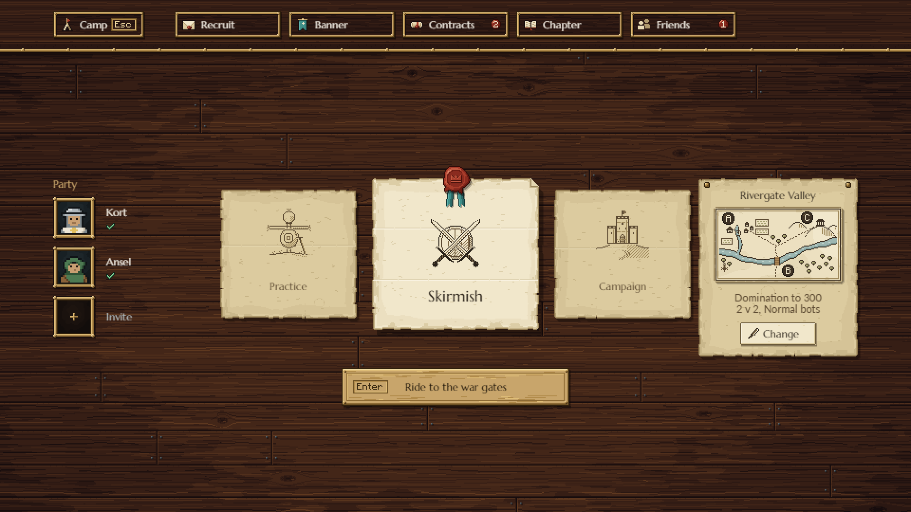
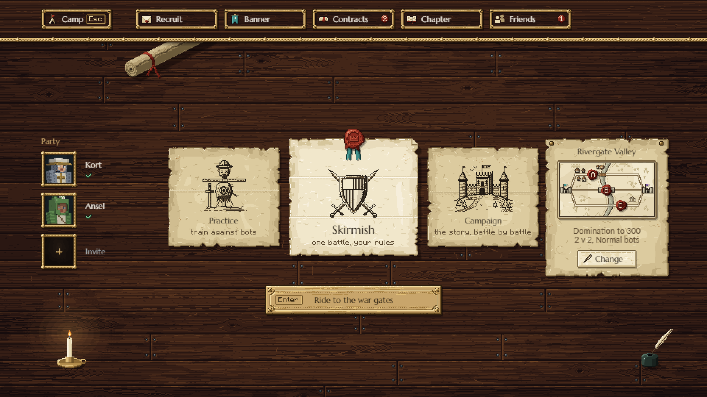
- The three orders are full ink illustrations with hatching: a practice dummy with its target, two crossed longswords behind a quartered heater shield, and the keep on its hill. A quieter line in the small size sits under each name: train against bots, one battle, your rules, and the story, battle by battle.
- The Rivergate map is drawn at full density, with contoured hills, fields, roads, the river with its banks and bridges, buildings, stands of trees and a compass. Its A, B and C seals are in relief.
- The rail is quarter-sawn oak with ray flecks and an ogee moulding, inlaid with brass engraved as a twisted cable. The plaques sit on slotted screws, each turned its own way, and the Ride plate has an engraved border that sweeps round each of its screws.
- The edges of the table now hold a few quiet objects: the campaign map rolled and tied with a faded red ribbon, its far end pushed under the rail and the curl of the sheet showing at its near end (v4.1, in place of the flat map corner), a candle with its light falling on the oak, and the inkwell and quill.
- The seats show each player's live model, posed as the spec poses portraits.
War Table, recruit
Read left to right: the roll you have, the letter you just opened, the letters still sealed. Enlist now sits right under the letters.
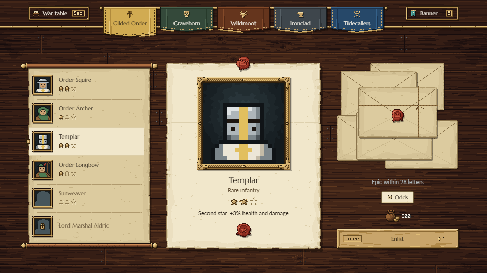
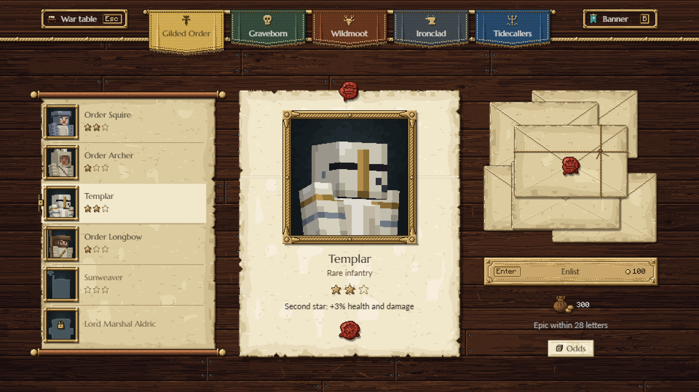
- The right column is one ladder on x 784, with 12 px between rungs: the sealed letters, Enlist right under them, the purse it spends from, the Epic count, then Odds. It ends on 492, as the other two columns do.
- Every portrait is the live model as the unit identity spec frames it: yaw 30, chest-up, 20 model px. The roll uses 40 px windows, so one model pixel is 2 GUI pixels. The reveal shows the skin at 8 GUI pixels per texel, exactly as the game will draw it. Sunweaver and Lord Marshal Aldric show as silhouettes.
- The House cloths are woven, with a twill in half steps, a sheen on the folds and fringes of two lengths. The rod has six tones and specular glints. The twine round the letters is twisted, and the envelopes are creased.
Third pass: War Table and Iron Ledger
Left: the v2 screen Kort graded. Right: v3. Portrait frames are windows for the game's live model render (drawEntity, scissored); the pixel busts inside them are placeholders until the unit identity pass delivers each unit's look. Hunger is gone from the HUD and nothing takes its place yet.
Iron Ledger HUD
One object in one material: vellum ledger cards bound in hammered iron.
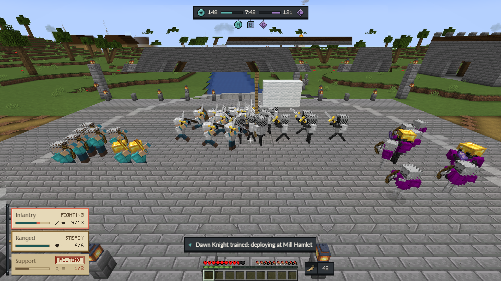
- The score bar is a ledger card clamped by two riveted iron bands, held between the Dawn boss (round, gold sun) and the Dusk boss (diamond, silver crescent). The three points hang from it on chains as enamelled seals.
- Contested B is a square split teal and violet with two swords crossed behind it, so it reads as a fight without the colours.
- Every group card names its order and formation beside the glyph (Attack, Shieldwall; Hold, Line; Follow, Compact). The selected card is brass-bound and carries the order keys G, V and B.
- A loss puts a red rule round the card and turns the lost stretch of the bar red. A rout greys the card, stamps ROUTING and reddens the count.
- The Rally Horn sits in an iron slot with a vellum window. A dark sweep covers the time still to run, the seconds sit on an iron tab beside it, and the H key is on a brass plate.
- The notice is a slip clipped to the top of the spine, out of the middle of the view. Vanilla hearts, XP bar and hotbar stay; there is no hunger row.
War Table, home
The whole screen is the table.
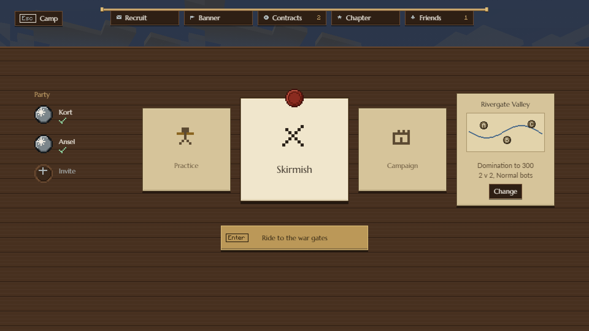
- The sky band is gone: the top of the screen is the table's back rail, and the camp's sections are brass-edged oak plaques bolted to it, each with a hand-drawn icon. Counts are wax drops.
- Change is now a vellum button with a quill, in the same parchment family as the orders.
- Oak planks with grain, knots and nails; orders on aged parchment with folds, deckled edges and ink drawings; the chosen order is sealed in wax with a teal ribbon; the field card holds an inked map of Rivergate Valley.
War Table, recruit
Read left to right: the roll you have, the letter you just opened, the letters still sealed.
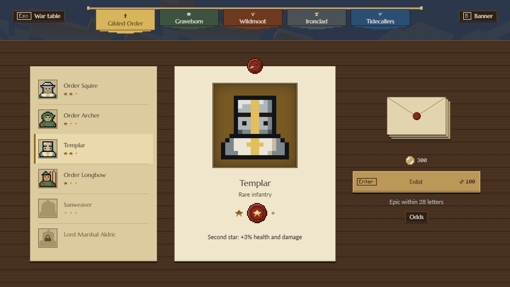
- The right column is one centred axis: the sealed letters, the Epic counter, Odds, the purse, then Enlist with its cost. The three columns share one top and one bottom.
- The star seal moved off the star row to the foot of the letter, so the tier reads as two stars of three.
- The five Houses are woven banners with embroidered devices, hanging from a brass rod on the rail. The chosen House hangs longer and brighter.
- The muster roll is a scroll on walnut rollers. The reveal is a 160 px live-render window in a cast, rope-banded frame, and the broken House seal lies above the letter.
Battle HUD
A. Marshal's Glass
The field seen through a spyglass: numbers and strokes on smoked glass, no frames.
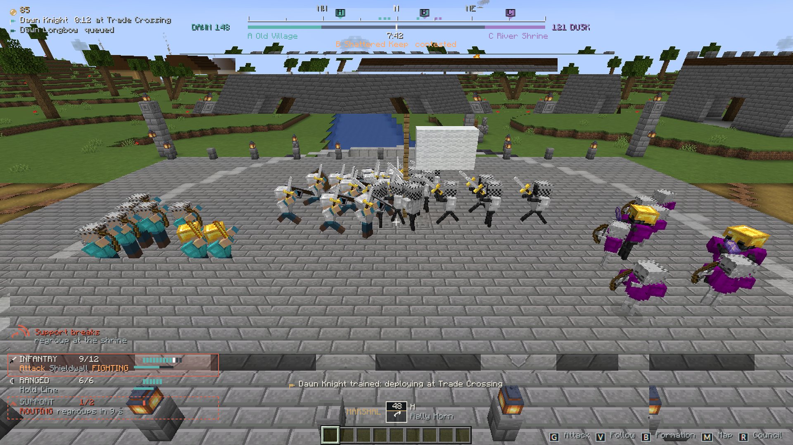
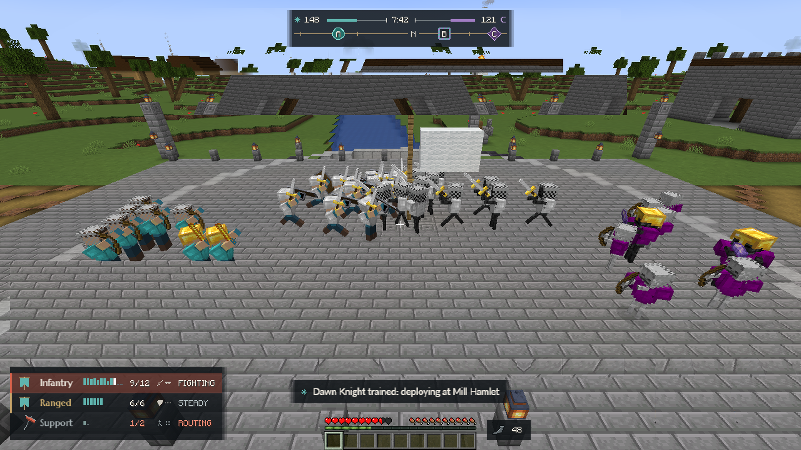
- One glass strip on top: the score race on one line (each side runs toward the timer; the posts are 300), then a bearing line where the points ride as seals: a ring for Dawn, a diamond for Dusk, a hatched square when contested.
- The line: one glass band, one row per group: standard, name, one pip per troop (its height is that troop's health), count, order and formation glyphs, one state word.
- A loss is a red row and a pip snapping white; a rout drops the group's standard and says ROUTING; the Rally Horn tile goes grey and counts down. The centre and right edge stay with the battle.
B. Iron Ledger
A quartermaster's ledger bolted to the screen: iron, vellum, wax.
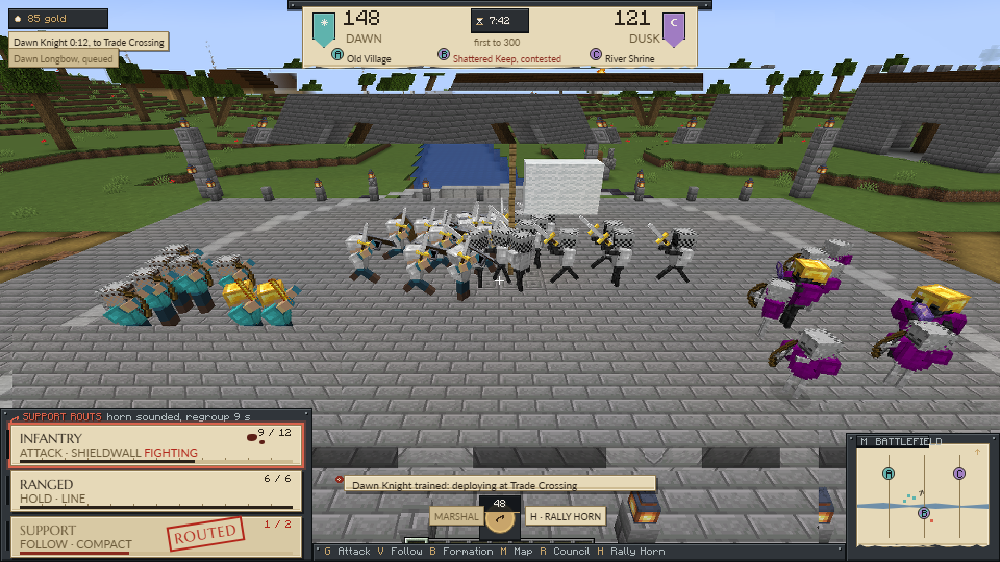
- One iron score bar (team crest, score, two tracks, timer) with the three points hung below on cords as wax seals; a contested seal is hatched in both colours.
- Group cards are vellum slips on an iron spine: name, state word, ink health bar, order and formation glyphs, count. A loss reddens the frame, the selected card wears brass, a rout is a ROUTING stamp on a darker slip.
- One dispatch notice above the hotbar; the ability is an iron tile with the horn and the seconds left. Map, gold and the training queue are one key away.
C. Banner Line
Your groups are standards planted in the ground in front of you.
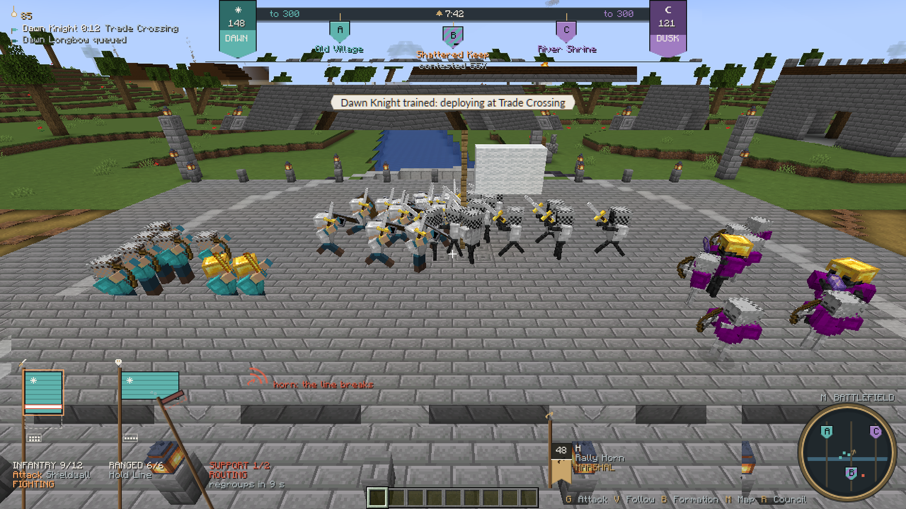
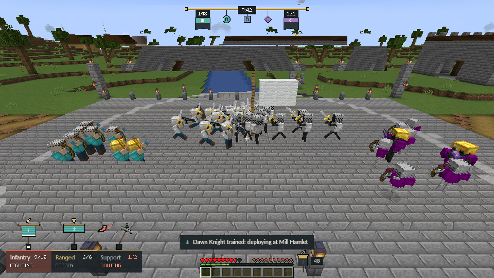
- Two great banners hang from a rail and are dyed down toward 300; the three point seals hang between them and the timer sits on a plate at the centre.
- Each group is a standard: one stripe per troop, cloth width for health, the order as finial, the formation as the base tile, the House glyph woven in. The words sit on one dark band underneath, so no pole crosses a label.
- A loss tears a white stripe and reddens the label; a rout leans the pole, the cloth hangs limp and a horn sounds beside it; the commander's own standard is the ability, its cloth dyed as the horn recharges.
Camp and menus
A. War Table
The commander's tent, seen from above the table: oak, parchment, ink, brass.
Home
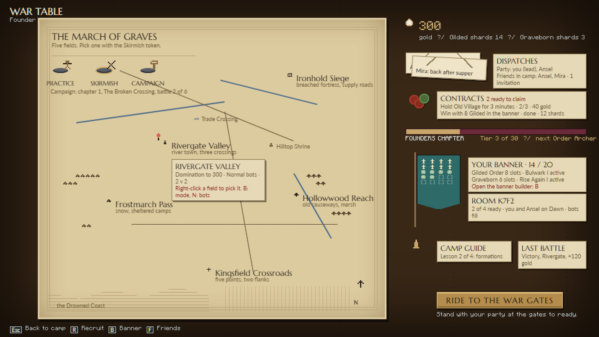
Recruit
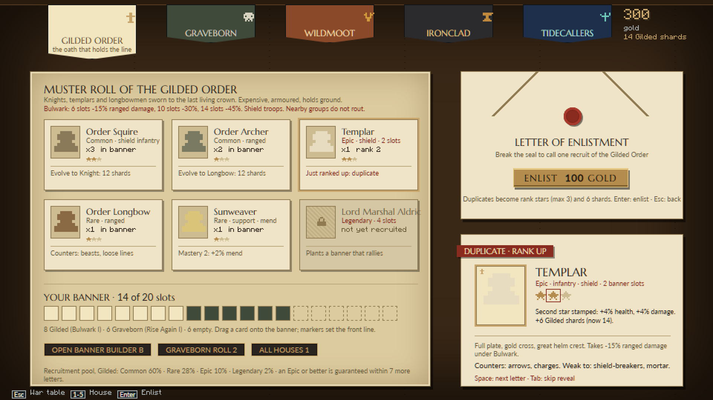
- Home: the party as lead tokens, three written orders with the chosen one sealed and lifted, the inked field card with its rules and Change, one Ride button. The rest of the camp hangs on the tent rail with count badges.
- Recruit: the muster roll (portrait, name, stars), then the letter of enlistment as the focal point with the second star stamped in wax, then the purse: gold, Enlist with its cost, the Epic counter, Odds.
- Palette change argued by section 9 of the vision: the camp has a war table, so the UI is that table. The warmest of the three.
B. Field Ledger
The charcoal we have, given a spine.
Home
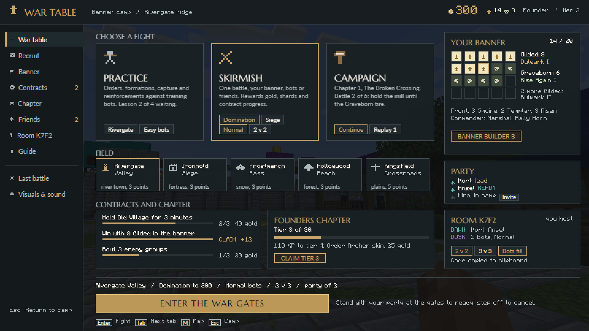
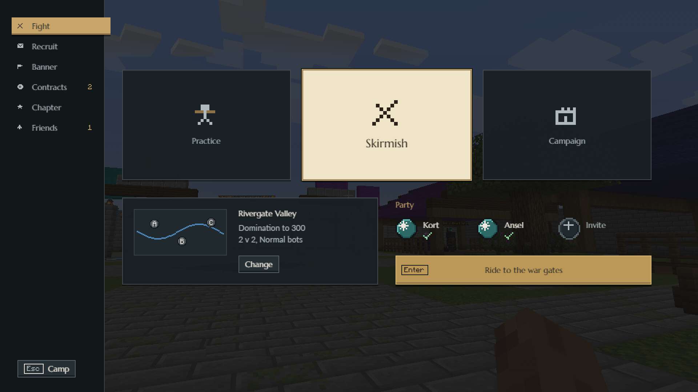
Recruit
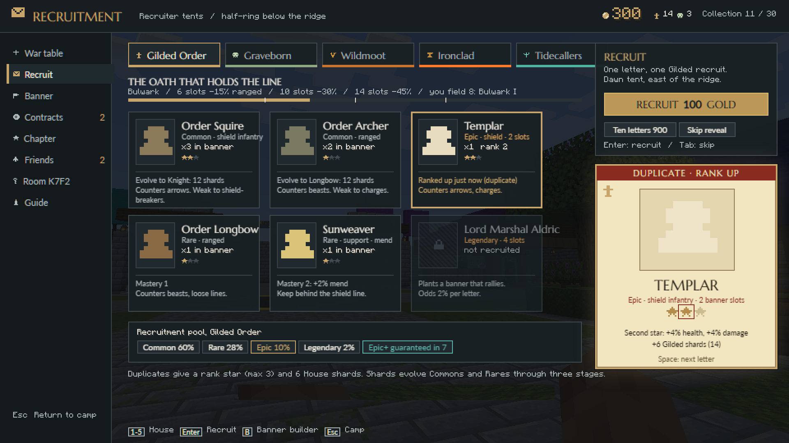
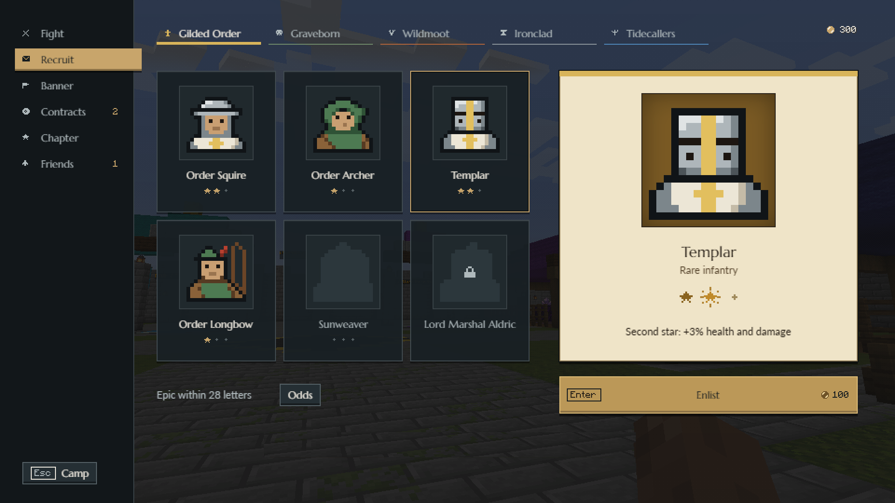
- Keeps DarkUi's charcoal, ivory and brass and the Marcellus headings; adds a spine of brass index tabs with count badges.
- Home: three fight plates where the chosen one is the only light surface, the field panel with its rules and Change, the party, one Ride button.
- Recruit: House tabs with colour underlines, six portrait cards with stars, a cream reveal card, Enlist with its cost under it.
C. Hall of Banners
Heraldry is the interface.
Home
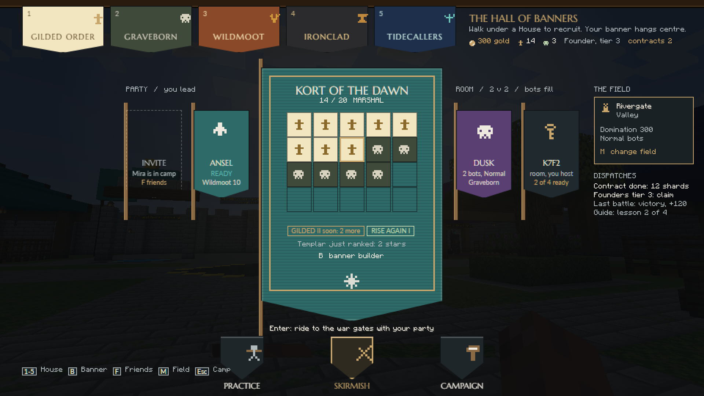
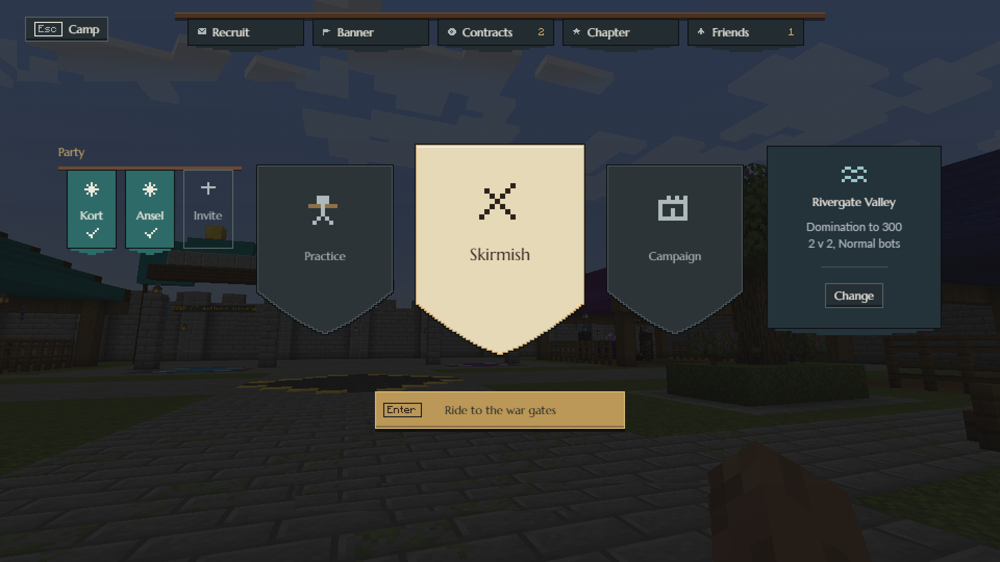
Recruit
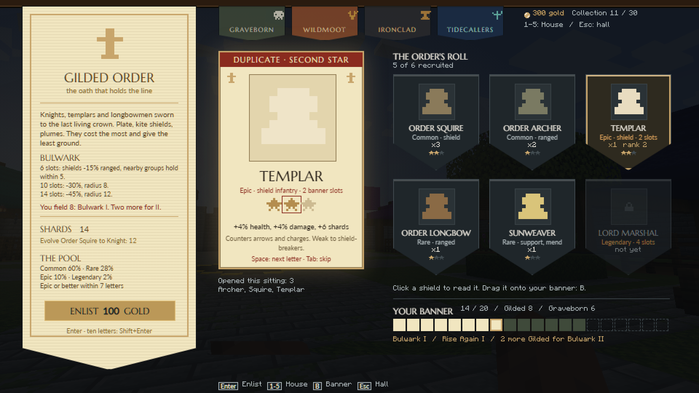
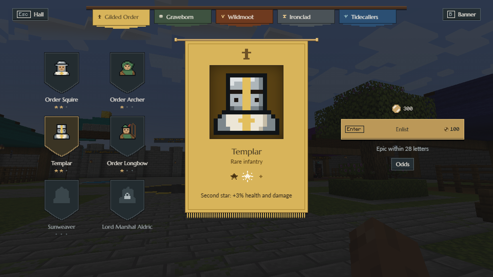
- Home: the sections hang as pennants from the hall beam; the party's banners hang on a rod; the three fights are shields on the wall with the chosen one lit; the field is a banner with its rules.
- Recruit: the House's troops as shields, the chosen House unfurled full height around the recruit it gave, the purse on the right.
- Boldest identity and the one that will look best in a trailer; also the one most likely to fight the live 3D camp behind it.
Recommendation
HUD: C, Banner Line, with A's bearing line as an option for the top band. Readable drama is pillar one: a line that breaks should look like a line breaking, and a leaning standard with a horn does that before the player reads a word. House glyphs on the cloth serve pillar two every second of the fight. Keep B's vellum for the end-of-match report.
UI: B, Field Ledger, dressed with A's objects. The camp is being rebuilt as a real war camp with recruiter tents, so a second flat table on top of it fights the world; B keeps the existing tokens and Marcellus headings and ships in weeks. Borrow the letter of enlistment, the stamped star for duplicates and the inked map seals as the field picker. Keep the Hall's hanging-party idea for the room screen.
Everything above is authored on a 1 px grid and holds at GUI scale 3 on 1440p because panels are 9-slices and text is the game's own glyphs.